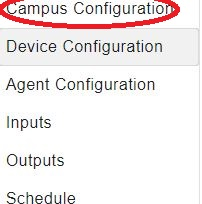
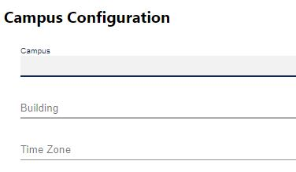
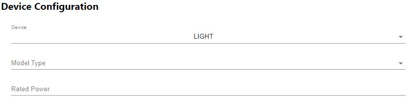
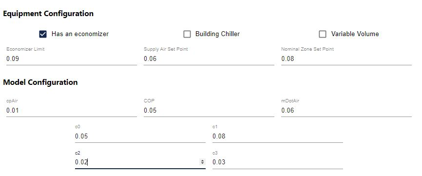
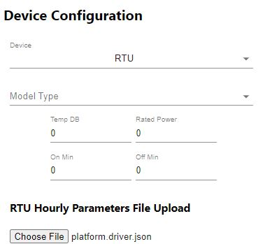
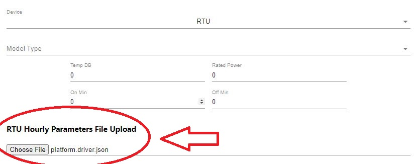
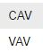

TCC Web Application: User guide¶
Introduction¶
TCC APPLICATION CONFIGURATION¶
!This doc is a test for creating a user guide. Edit this out when entire doc draft is finished.!
The TCC application behavior is controlled through these configuration Pages:
The Campus Configuration page
The device/criteria configuration page
The Agent Configuration page
The Inputs page
The Outputs page
The Schedule page
Importing the Master Driver Configuration Store¶
- At the initial homepage, the user will be prompted to upload the Master Driver Configuration Store file.
Values within the Master Driver Configuration Store will be parsed to provide options for Campus, Building, Time Zone and Points throughout the application.

Once the user has selected the Master Driver Configuration Store, this homepage will not appear again. However, if the user needs to upload a different Master Driver Configuration Store at any point, this option can be accessed via the Menu icon in the top left of the application.
Warning
Uploading a new Master Driver Configuration Store will remove all current data in the application.
Campus Configuration¶
When a Master file has been uploaded, the application will go into the Campus Configuration page. The first selections that will be shown are the Campus, Building, and Time Zone dropdown’s.
 - Campus
The campus name as published by the VOLTTRON platform.driver service.
- Building
The building name as published by the VOLTTRON platform.driver service.
- Time Zone
Time Zone has default strings implemented into the program.
Device Configuration¶
Device Configuration is the second page in the list of main configuration pages. Once this page is selected, there will be a list of items with dropdown options shown in the center.
There are 4 different selections with device. When the device drop down is selected, these 4 items will be shown:

After a Device is chosen, there is an option below it to choose the model type. The two options will be First Order Zone and Simple. Once an option of these are chosen, the option will be stored inside of the JSON code.

The last value(s) will be determined based upon the device chosen. This list will go over each of the different options the device configurations will go over.
AHU
AHU’s configuration starts with the Equipment Configuration. There are 3 check boxes shown at the start of the config. The first one being Has an economizer, second: Building Chiller, and third: Variable Volume.
Note
Each of these check boxes are stored as boolean values. If checked, it will be stored as “True” or 1. if unchecked, it will be stored as “false” or 0.
under the check boxes there is 3 items: Economizer limit, Supply Air Set Point, and Nominal Zone Set Point. All of these items take in a float based value.
Model Configuration is another option that will be available upon selection of the AHU Device. Inside of Model Configuration there are a selection oh inputs to use. cpAir, COP, mDotAir, c0, c1, c2, and c3. These inputs take in a float value as well. They will be shown inside the Model configuration of the Device configuration JSON code.
Light
light is the second selection of the device list inside of Device Configuration. Once light is selected, There will be a new dropdown located at the bottom of the items list called Rated Power.

Rated Power Takes in a float value to store.
RTU
RTU is the third selection of the device list inside of Device Configuration. Once RTU is selected, there will be a new selection of items to insert info.
There are 4 options to input float values into. Temp DB, Rated Power, On Min, and Off Min.
Below these inputs is RTU Hourly Parameters File Upload. This will allow a file to be uploaded into.
VAV
VAV is the last item on the device list inside of Device Configuration. When VAV is selected, there will be a new selection of items to insert info.

The VAV will add a new drop down called Terminal Box Type. This will produce a list option of CAV or VAV within the dropdown.
The VAV Device Configuration will also allow an Hourly Parameters File Upload. This will be located at the bottom of the page.